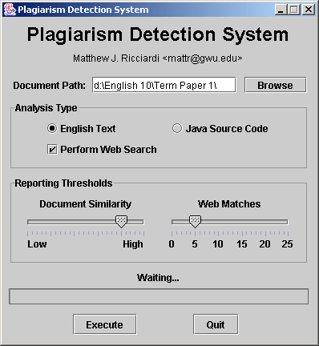

Plagiarism Detection System:
Although the Internet has made it easier for students to perform research and obtain information, it has also made it easier for them cheat, often by downloading large portions of papers from the Internet or electronically exchanging computer program source code with other students. The Plagiarism Detection System assists university professors and other educators by detecting plagiarism in English papers and Java source code.
English papers are compared with other papers via a hashing approach and compared against Internet content by leveraging the power of a well-known search engine. Java source code is compared with other submissions for the same assignment both structurally and lexically. Merely changing variable names and reordering statements are not sufficient to fool the detection algorithm.
